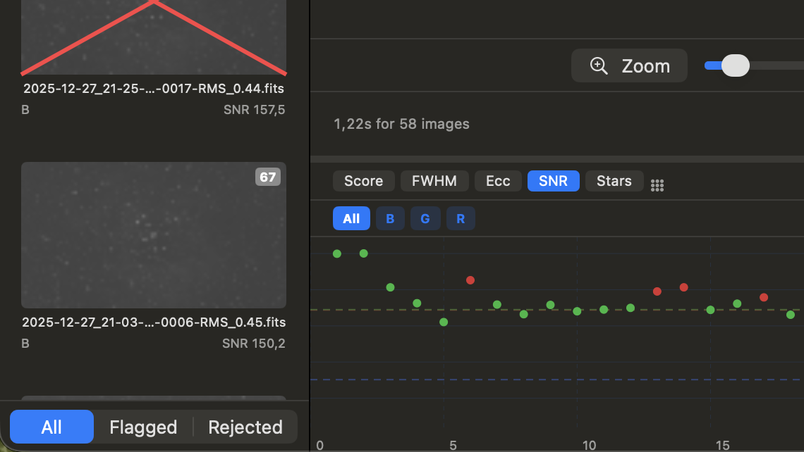
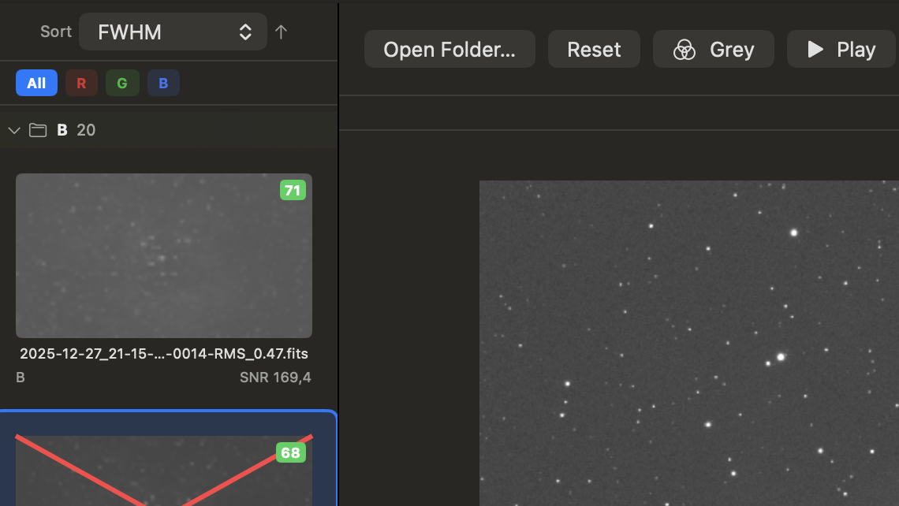
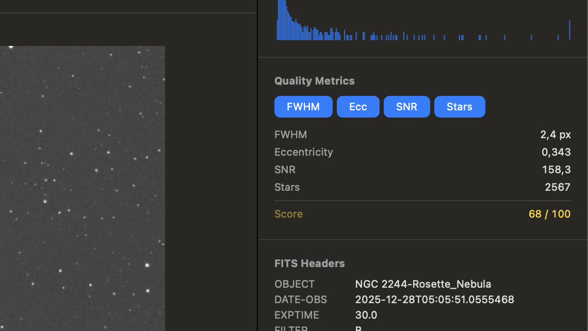

Measures star quality — FWHM, eccentricity, SNR, and star count — directly from raw pixel data
GPU-accelerated rendering of 16 MP+ FITS files with no perceptible lag
Session chart with drag-to-select for fast batch culling
Filter-aware grouping: Ha, OIII, SII, RGB, and more
Auto-select with configurable thresholds
Subfolder scanning for multi-night sessions
Works fully offline — only a lightweight daily update check uses the network

Session chart with drag-to-select

Thumbnail sidebar with filter grouping

Inspector with quality metrics and FITS headers
What others say
Review by Sascha Wyss
Join the community
Got questions, tips, or want to share your results? Join the FITS Blaster Users group on Facebook — a place to connect with other astrophotographers using FITS Blaster.
More Mac astrophotography software
Looking for other great macOS tools for astrophotography? Mac Observatory maintains a comprehensive directory of 60+ astronomy apps for Mac — from acquisition and guiding to processing and plate solving.